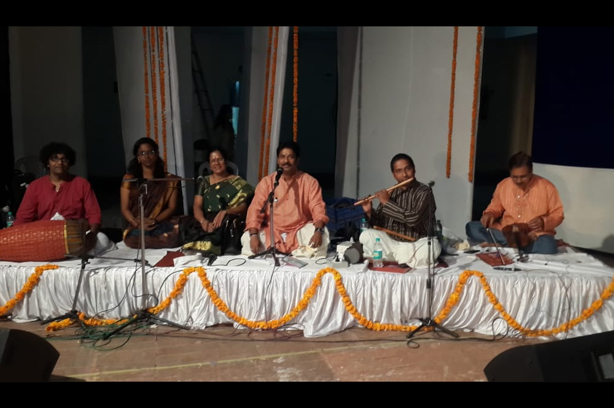
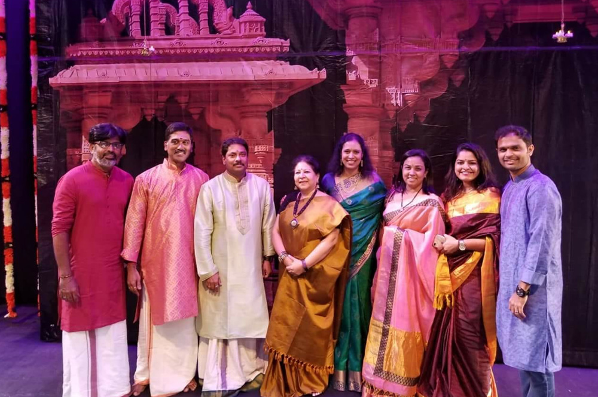

01 · Carnatic
Solo Concert
Sivaprasad NN in a full Carnatic vocal recital, with accompaniment arranged as the programme requires.
Enquire for this format →
Concerts & ensembles
Concerts, dance accompaniment and collaborative line-ups, thoughtfully assembled around your programme.
A complete musical response
Across four decades, he has built trusted relationships with Carnatic vocalists, flautists, violinists and accompanying musicians. That network can be shaped into one coherent ensemble, with him at the centre.
Sivaprasad NN in a full Carnatic vocal recital, with accompaniment arranged as the programme requires.
Enquire for this format →
A complete live music ensemble for your dance production or arangetram, with him as lead vocalist.
Enquire for this format →
A curated fusion or jugalbandi line-up, blending Carnatic, Hindustani and instrumental artists.
Enquire for this format →
Curated, not assembled
The right line-up is more than a list of instruments. Each artist is selected for the form, the repertoire and the way the group needs to move together on stage.
How it works
Three clear steps, with one conversation running through the whole process.
Share the occasion, the form of music, the approximate scale and your preferred timing.
The right ensemble is curated from the network, sized to your programme and requirements.
One point of contact coordinates the artists, giving you a seamless musical experience.

Begin the conversation
Describe what you have in mind and we will propose the ensemble that fits.